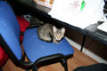
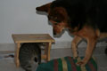

2006.08.26., szombat
tomcat
blog
droidzóna
levrov
Az állatközi helyzet fokozódik. Berta még mindig nem jött rá, hogyan kell kommunikálni a macskával, de arra már igen, hogy ez a kis sátán a legváratlanabb pillanatokban csimpaszkodik hol a lábára, hol a farkára. Estére azonban megértette, hogy igazából ez a macskánál csak játék, és tulajdonképpen lehet ezzel a kis izével játszani, csak nem kell mindjárt kettéharapni. Így hát megvan végre a közös szórakozás: Bors rohangál és kapkod Berta farka után, Berta pedig idõnként bekapja. A macska már csupa nyál, a kutyának meg olyan a farka, mint egy felizgatott fogkefe, de mindketten vidámak. Ha Bors unja már a játékot és leheveredik, Berta odamegy, és a foga hegyével elkezdi bolházni. Ezt a macska nem szenvedheti, és igyekszik elmenekülni. Így már végre Bertának is van módszere a basztatáshoz, amit eddig csak a macska mûvelt õvele, s nem kell folyton menekülnie, ha õ pihenni akar, és a macska nem. Arra is rájött, hogy tulajdonképpen rámordulhat Borsra, ha az már megint az õ kajájára pályázik, nem kell rémült szemekkel hozzám szaladoznia, hogy "úristen, gyere gyorsan, ez eleszi elõlem a vacsorámat". És arra is, hogy végsõ soron egy macska is lehet egész jó barát, akivel együtt lehet aludni a szõnyegen.
Bors pedig beszélni tanul Bertától. Megleste, Berta hogyan hív sétálni engem: elõbb megbökdösi a bakancsomat, aztán a lábamat, jelezve, hogy vegyem fel. Erre rájött, hogy õ is eléri, amit akar, ha megbökdösi a macskaalmos zsákot, majd az igencsak kiürítésre váró alomládát. Okos cica. Berta hozzá is beszél: ha Bors olyan helyre mászik, ahová nem kellene, vagy olyasmit mencserget, amit nem kellene, Berta oldalba böki az orrával, és rosszalló arccal néz. Bors pedig érti.
Szóval lassan rend van, és már Athina sem fuldoklik, kezd múlni az allergiája. Nézzetek megint képeket.
Bors idõnként beül a monitor alá, és figyeli, ahogy járnak az ujjaim a billentyûkön. Itt éppen a tegnapi levrov készült. Ja, igen, nem is mondtam. Van az is.
SMS érkezett, Bors kíváncsian nézegeti

Berta pofákat vág. Õ is szeretne az asztalra ülni, de ahhoz túl nagy.
Bors kedvenc helye. Esténként itt szeret elaludni. Igen, a mellemen. Most is itt dorombol, amikor ezt írom.
De van, hogy felül a vállamra, és onnan figyeli a képernyõt

Itt repül a kismadár!
Szokása befeküdni a derekam és a széktámla közé is. Nem zavarja, ha nekidõlök, mint ahogy az itt is látható. Ezt a helyet akkor favorizálja, ha hirtelen bejön valaki, és el kell bújni.

Ha dolgozom, és megkérem, hogy ne másszon rám, erre a székre telepedik
Berta persze féltékeny. Amióta a macska a szobámban dekkol, õ is keresett magának egy helyet mellettem.
Mint említettem, Bors kedvenc játéka Berta farka
Berta dilemmája. Hogy lehet meredten bámulva kinézni a gazda szájából a falatot, ha közben bármelyik pillanatban jöhet ez a kis mitugrász, hogy elkapja a farkát?
Közös játék: bújócska

A sámli ki lett nevezve macskabunkernek

"Szusz-szusz?"
"Pffhhh! Karm!"
Berta játszik

Itt éppen nem tudták eldönteni, ki kapja el a másikat
Borsnak volna még mit fejlõdnie az álcázástechnika terén
Hamm!
Miután a sasszemû kutya kiszúrta, hogy a párna alatt van, Bors húsz körömmel védi pozícióját
Ha a sámli alatt nem sikerül elbújni, a kettes számú rejtekhely a radiátor mögött található
Továbbá a tévészekrény mögött is el lehet tûnni
Végül mindig a fotelnél kötnek ki